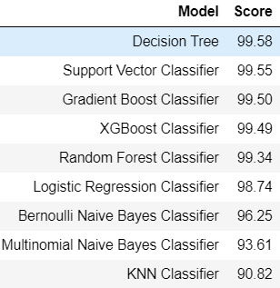
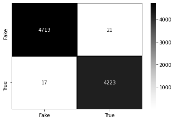
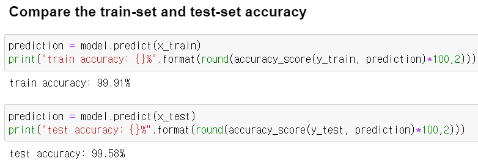

뉴스데이터 예측 분류📰
2020/05~2020/06
여러가지 예측 분류 방법을 이용한 뉴스 데이터 참 거짓 예측
문제 인식
디지털 형태의 의사소통을 통해 전파되는 오보 등의 허위사실인 가짜 뉴스가 소셜 미디어를 통해 유통된 결과 큰 사회적 문제를 가져왔기 때문에 뉴스 데이터의 참 거짓을 분류하는 분석을 진행했습니다.
프로젝트 구조
- 데이터 전처리
- 분류 분석
- Logistic Regression Classifier
- Support Vector Classifier
- Multinomial Naive Bayes Classifier
- Bernoulli Naive Bayes Classifier
- Gradient Boost Classifier
- XGBoost Classifier
- Decision Tree
- Random Forest Classifier
- KNN Classifier
사용한 데이터
1. 데이터 전처리(클리닝)
- 영문자 이외 문자 공백으로 전환
- 소문자 변환
- 불용어 제거
- 공백으로 구분된 문자열로 결합하여 결과 반환

2. 분류 분석
연속적인 함수를 실행시킬 수 있는 pipeline을 이용해 combine컬럼을 벡터화 시킨후, 역문서 빈도를 적용하고, 모델을 적용하였습니다.
Decision Tree 모델의 정확도가 가장 높게 나왔습니다.
3. Decision Tree 평가
- 훈련용 모델은 99.91%이고, 테스트용 모델은 99.58%로 큰 차이를 보이지 않아서 과대적합이 아닌 것을 알 수 있습니다.
- 잘못 분류된 데이터가 적은 것으로 보아 모델이 잘 작동하고 있습니다. 
- 과적합 확인
